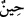

(s.a.)’e düşmanlığı gizlerler ki elbise içinde olan şeyleri kapattığı gibi onlarda gizli ve
örtülü olsun.
İbn Abbas (r.a)’tan rivâyet edildiğine göre bu âyet Ahnes b. Şerik ez-Zührî hakkında
nâzil olmuştur. Bu adam, sözünü yerli yerinde sarf eden, tatlı dilli bir kimseydi.
Rasûlullah (s.a.)’i seviyor gibi görünür, fakat içten içe tam tersi duygular beslerdi.
İbn Şeddâd ise bu âyetin bir münafık hakkında nâzil olduğunu söyler. Bu münafık
Rasûlullah (s.a.)’in yanından geçerken Nebî (a.s.) kendisini görmesin diye göğsünü
çevirir, sırtını döner, başını eğer ve yüzünü saklardı. Bu hareketi sanki şunun için
yapardı: Hz. Peygamber kendisini gördüğü takdirde O’nun meclis ve sohbetinden geri
kalması mümkün olmazdı. Belki de bu durum onun kalbindeki küfür ve nifâkın ortaya
çıkmasına sebep olurdu.
Eğer: “Bu âyet, Mekke’de nâzil olmuştur, nifâk ise Medine’de ortaya çıkmıştır.”
dersen ben şöyle cevap veririm: “Bu mümkün olmasa da zuhûru orada olmuştur.
Söylediğin söz kabul edildiğinde, bu âyetin Kur’an mûcizelerinden biri olan “gaybtan
haber verme” kabilinden olduğu söylenebilir.
“Yine iyi bilin ki onlar örtülerine büründükleri” İbn Şeddâd’dan nakledildiği üzere
yataklarına sığınıp elbiseleriyle iyice örtündükleri, yataklarına girdikleri ve
elbiselerine büründükleri “zaman dahi” Allah onların kalblerinde “gizlediklerini de”
ağızları ile “açığa vurduklarını da bilir.” Kâfirler evlerine girer, elbiselerine ve
örtülerine iyice bürünür sırtlarını da hafif büküp: “Allah kalbimdekini nereden
bilecek!” derdi.
el-Kevâşî de şöyle denilir: Âyetteki “
(zaman)” ifâdesi, örtüye bürünme zamânını
göstermektedir, yoksa Allah’ın ilminin zamânını değil.” Yâni, Allah’ın onların gizli ve
âşikâr olarak yaptıklarını bilmesinin sadece bu bürünme vaktiyle sınırlı olduğunu
göstermek için değildir. Allah bu şeyleri her zaman bilir. Şu halde Allah Teâlâ, onların
gizli ve âşikâr hallerini, gizlinin bile gizlendiği o örtüye bürünme ânında bildiğine göre
başka zamanlarda haydi haydi bilir. Âyetteki ifâde âdete göre söylenmiştir. Yoksa
mahlûkatın durumundaki değişikliklere göre Allah Teâlâ’nın ilmi değişmez.
Âyette “gizledikleri”, “açığa vurdukları”ndan önce zikredilmiştir. Çünkü gizlilik/sır
mertebesi, açıklık/aleniyet mertebesinden önce gelir. Çünkü açıkça yapılan her şey veya
onun dayanakları daha önce kalbde gizlidir. Bu bakımdan Allah Teâlâ’nın ilminin bir
şeyin ilk durumuna taalluk edişi, ikinci duruma taalluk edişinden öncedir.
“Çünkü O,” yani Allah Teâlâ “kalplerin özünü bilendir.” Bütün insanların
içlerindekini, göğüslerinde saklı oradan aslâ ayrılmaz gizli sırlarını ziyadesiyle bilip
kuşatır. Gizli-âşikâr yaptıkları şeyler nasıl O’na gizli kalsın?!
Ey sırrını gönlünde saklayan!
Bilir onu gönlü yaratan.
Âyetin mânâsı şöyledir: İnkâr ve düşmanlıklarını içlerinde saklayanlar bize gizli